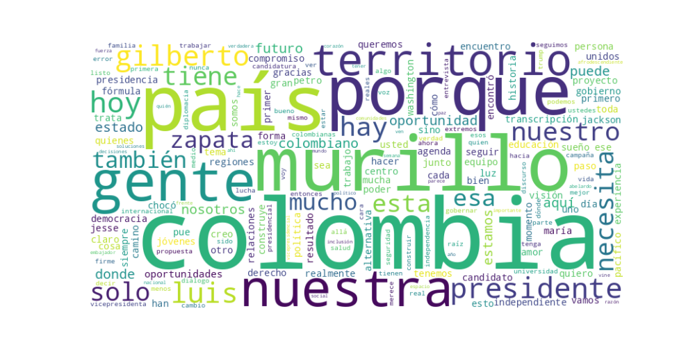

Seguidores: 78,951
1. Perfil de Comunicación: El candidato emplea un estilo de comunicación predominantemente informal y cercano, con un claro objetivo de conectar emocionalmente. Utiliza un lenguaje accesible y popular, evitando tecnicismos, aunque recurre a términos de gestión pública cuando describe su experiencia. El tono es íntimo y personal, con frecuentes apelaciones al "nosotros" y referencias a su historia de vida ("De Chicago al Chocó"). Busca proyectarse como una figura accesible y de raíz popular, a pesar de su vasta trayectoria internacional y técnica. El uso de emojis, hashtags y un lenguaje conversacional (ej. "Los leo en los comentarios") refuerza su estrategia de cercanía digital.
2. Temas Principales: * Descentralización y Desarrollo Regional: Es el eje central de su discurso. Aborda la marginalización histórica de las regiones, especialmente el Pacífico y Chocó, prometiendo "gobernar desde y para los territorios". Propone "universidades comunitarias" y critica el "centralismo" como generador de desigualdad. Ejemplo: "El centralismo no es una palabra técnica, es el vacío que queda cuando el talento tiene que migrar para no estancarse." * Independencia y Antiestablishment: Se posiciona como la alternativa "independiente" a los "clanes políticos tradicionales", "las élites que se turnan el poder" y los "extremos" de la polarización. Critica las "maquinarias" y el "nepotismo". Ejemplo: "Voy independiente porque no represento a las élites que se turnan el poder. Mi campaña no tiene jefes políticos, tiene ciudadanos." * Pragmatismo y Gestión por Resultados: Enfatiza su experiencia como gestor ("he sido ministro, embajador, gobernador") y contrasta su propuesta con la "retórica" vacía. Promete "soluciones prácticas", "menos discursos, más acción" y "decisiones incómodas". Ejemplo: "Gobernar no es ganar una discusión, es resolver los problemas que otros han dejado crecer." * Diversidad e Inclusión: Hace de su identidad afrodescendiente y de origen regional un pilar programático. Promete ser "el primer presidente afro del Pacífico" y generar un gobierno que "se parezca a su gente". Aboga por la "igualdad real" y contra el racismo y la estigmatización. Ejemplo: "Aspiro a la presidencia... para que, por fin, el poder en Colombia se parezca a su gente." * Diplomacia y Relaciones Internacionales: Destaca su experiencia en Washington y su rol en la relación con Estados Unidos. Transmite un mensaje de pragmatismo y "sensatez" en política exterior, priorizando los "intereses nacionales" sobre la "ideología". Ejemplo: Describe su enfoque como entender que, para figuras como Trump, "los datos pesan más que las etiquetas".
3. Tono y Sentimiento Dominante: El tono general es esperanzador y propositivo, con una base de crítica constructiva hacia el statu quo. Combina un mensaje de optimismo sobre el futuro ("potencia de vida") con una denuncia firme de la exclusión y la desigualdad. Evita un tono agresivo o visceral, optando por una confrontación mesurada contra el establecimiento político. Prevalece un sentimiento de orgullo regional y confianza en la capacidad de gestión, buscando inspirar más que indignar.
4. Palabras Clave de Poder: * "La Colombia que nos merecemos / merece": Su hashtag y eslogan central, que engloba la promesa de un futuro mejor y más justo. * "Territorios / Regiones": El núcleo geográfico de su propuesta, en oposición al "centralismo" de Bogotá. * "Independiente": Su principal diferenciador político, asociado a honradez y libertad de "maquinarias". * "Oportunidad es Colombia": Un eslogan de campaña posterior que enfatiza el potencial del país bajo su liderazgo. * "Resultados / Soluciones / Acción": Términos que contrastan con lo que presenta como la "politiquería" y los "discursos" vacíos. * "Experiencia" y "Trayectoria": Utilizados para validar su capacidad de gobierno frente a rivales percibidos como improvisados. * "Pacífico / Chocó / Raíz": Marcadores de su identidad y origen, símbolos de su conexión con la Colombia "olvidada".
5. Conclusión Estratégica: La estrategia de comunicación de Luis Gilberto Murillo se articula como la de un "outsider con credenciales". Busca hablarle a una audiencia amplia, cansada de la polarización y la política tradicional, pero especialmente a los votantes de las regiones periféricas y a las minorías étnicas que se sienten subrepresentadas. Su discurso busca evocar un sentimiento de esperanza concreta (no solo ilusión), legitimada por su biografía personal de superación y su historial técnico. Se presenta como el puente entre el anhelo de cambio y la capacidad de ejecutarlo, ofreciendo una alternativa de "centro con raíz" que promete unificar al país desde su diversidad, gobernando con pragmatismo y cercanía. Su narrativa maestra es la de convertir la exclusión histórica en la principal credencial para liderar la inclusión futura de toda la nación.
Reporte Estratégico de Comunicación - Candidato Luis Gilberto Murillo
1. Resumen del Patrón de Éxito: El contenido más exitoso del candidato se basa en una fórmula de identidad y autenticidad territorial. No se trata de discursos abstractos o promesas genéricas, sino de una comunicación que ancla su mensaje político en una experiencia personal y geográfica tangible: su origen en el Pacífico colombiano y su conexión con las "regiones olvidadas". El éxito reside en convertir su biografía (ser afrocolombiano, chocoano, con experiencia internacional) en el marco narrativo principal de su propuesta política. La emoción predominante no es la indignación o el miedo, sino una esperanza orgánica, basada en la reivindicación de la diversidad como fuerza nacional y en la capacidad de "liderar desde los territorios".
2. Tácticas de Comunicación Clave: * Narrativa del "Origen" como Credencial: Usa constantemente su historia personal ("de donde vengo yo, de mi Pacífico") y su trayectoria profesional ("trabajé, estudié y cabildeé") como la prueba fundamental de su capacidad, sensibilidad y legitimidad. No es solo experiencia, es experiencia con raíces. * Definición por Contraste (Antipolarización): Define su posición no atacando frontalmente a otros candidatos, sino rechazando el marco tradicional ("¿Izquierda o derecha? 🚫 No se trata de eso"). Se posiciona como la alternativa independiente y con conciencia de país que supera la "polarización" y la "politiquería barata". Su "enemigo" es el modelo binario y vacío, no un individuo. * Evidencia de Gestión por Hechos: Cuando debe defender su trayectoria ("¿qué hice realmente?"), no recurre a listas de logros abstractos. Los presenta como soluciones concretas y territorializadas ("la Ley 70", "corporaciones autónomas", "inversiones en Chocó"), hablando como un gestor, no como un ideólogo. * Engagement Conversacional Directo: Integra formatos de pregunta directa a ciudadanos en la calle ("¿Qué opinan?"), lo que le permite validar su mensaje con la voz "real" de la gente, mostrando cercanía y dando un tono de autenticidad a su discurso.
3. Temas de Mayor Resonancia: Los temas que generan mayor interacción son aquellos que fusionan su identidad personal con una agenda nacional: 1. La Defensa de la Diversidad Cultural: Lenguas nativas, pueblos afrodescendientes e indígenas. No como tema folclórico, sino como pilar de la "identidad" y la "unión" del país. 2. La Reivindicación de las Regiones: El "Pacífico", "Chocó", los "territorios abandonados". Presenta el desarrollo equitativo de las regiones como la clave del éxito nacional. 3. Experiencia y Sensibilidad: La combinación de su "trayectoria" (internacional, pública) con su "conocimiento del territorio". Ofrece "capacidad" sin perder "conexión". 4. La "Alternativa Independiente": El rechazo a la polarización izquierda-derecha y la promesa de un proyecto que "representa a los territorios".
4. Perfil de la Audiencia Implícita: El lenguaje y los temas apuntan a una audiencia plural pero con un núcleo claro: votantes regionales (particularmente del Pacífico y otras zonas históricamente marginadas), jóvenes que valoran la diversidad e inclusión, y una franja del electorado urbano desencantado con la polarización tradicional, que busca una opción "con conciencia de país" y gestión práctica. No habla solo a su base étnica, sino que usa esa identidad como puente para hablar a una Colombia multicultural.
5. Conclusión Estratégica: La clave fundamental del poder de su discurso es la sincronización perfecta entre biografía y propuesta política. Murillo no "tiene" una agenda para las regiones; él es, en su persona y historia, la personificación de esa agenda. Su poder radica en que su mensaje no es algo que promete hacer, sino algo que él es y ha vivido. Esto le da una autenticidad formidable y lo diferencia del discurso político tradicional, que suele separar la vida personal del programa de gobierno. Su comunicación exitosa convierte su candidatura no solo en una opción política, sino en la materialización simbólica de la Colombia diversa y descentralizada que propone.

Caption: En Colombia más de 70 lenguas nativas, pero todos sentimos el mismo amor por nuestra tierra. 🗣️❤️ En el Pacífico aprendimos que la verdadera unión nace de entender la diferencia. Proteger nuestras lenguas nativas es defender nuestra identidad y nuestra historia. 🧭 Porque quien respeta sus raíces, sabe trazar su futuro. ¡Feliz día de las lenguas nativas! 🇨🇴✨ #Identidad #ColombiaDiversa #GestionConRaices #Murillo #díadelaslenguasnativas
Likes: 1,021 | Comentarios: 125 | Reproducciones: 4,092
Ver en InstagramCaption: El Sueño Colombiano: Donde el talento de las regiones encuentra su lugar. ✨ Trabajé, estudié y cabildeé hasta llegar a lo más alto en el exterior, pero la verdadera cima es ver a mi país transformado. El desarrollo de Colombia hoy depende de una sola cosa: que nadie se quede por fuera. 🤝 Vamos a construir una Colombia donde el éxito no sea la excepción, sino el destino de todos. Es nuestro momento 🇨🇴🫰🏾 #SueñoColombiano #MurilloResponde #JusticiaSocial #lacolombiaquemerecemos
Likes: 1,090 | Comentarios: 182 | Reproducciones: 4,396
Ver en InstagramCaption: ¡Garantías, no promesas! La seguridad de los candidatos es la base de nuestra democracia. Le exigimos al Gobierno protección real y efectiva para todos los que recorremos el país. Mi voz es firme para defender la libertad y el respeto que Colombia merece. #MurilloPresidente #lacolombiaquemerecemos #SeguridadYa #DemocraciaReal #LuisGilberto Independiente
Likes: 1,137 | Comentarios: 192 | Reproducciones: 5,378
Ver en Instagram